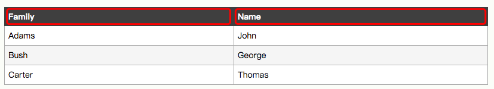

以下为 MYSQL 数据库的语法，部分不适用于其他数据库。
数据类型
在 MySQL 中，有三种主要的类型：文本、数字和日期/时间类型。
Text 类型
| 数据类型 | 描述 |
|---|---|
| CHAR(size) | 保存固定长度的字符串（可包含字母、数字以及特殊字符）。在括号中指定字符串的长度。最多 255 个字符。 |
| VARCHAR(size) | 保存可变长度的字符串（可包含字母、数字以及特殊字符）。在括号中指定字符串的最大长度。最多 255 个字符。 注释：如果值的长度大于 255，则被转换为 TEXT 类型。 |
| TINYTEXT | 存放最大长度为 255 个字符的字符串。 |
| TEXT | 存放最大长度为 65,535 个字符的字符串。 |
| BLOB | 用于 BLOBs (Binary Large OBjects)。存放最多 65,535 字节的数据。 |
| MEDIUMTEXT | 存放最大长度为 16,777,215 个字符的字符串。 |
| MEDIUMBLOB | 用于 BLOBs (Binary Large OBjects)。存放最多 16,777,215 字节的数据。 |
| LONGTEXT | 存放最大长度为 4,294,967,295 个字符的字符串。 |
| LONGBLOB | 用于 BLOBs (Binary Large OBjects)。存放最多 4,294,967,295 字节的数据。 |
| ENUM(x,y,z,etc.) | 允许你输入可能值的列表。可以在 ENUM 列表中列出最大 65535 个值。如果列表中不存在插入的值，则插入空值。 注释：这些值是按照你输入的顺序存储的。可以按照此格式输入可能的值：ENUM(‘X’,’Y’,’Z’) |
| SET | 与 ENUM 类似，SET 最多只能包含 64 个列表项，不过 SET 可存储一个以上的值。 |
Number 类型
| 数据类型 | 描述 |
|---|---|
| TINYINT(size) | -128 到 127 常规。0 到 255 无符号*。在括号中规定最大位数。 |
| SMALLINT(size) | -32768 到 32767 常规。0 到 65535 无符号*。在括号中规定最大位数。 |
| MEDIUMINT(size) | -8388608 到 8388607 普通。0 to 16777215 无符号*。在括号中规定最大位数。 |
| INT(size) | -2147483648 到 2147483647 常规。0 到 4294967295 无符号*。在括号中规定最大位数。 |
| BIGINT(size) | -9223372036854775808 到 9223372036854775807 常规。0 到 18446744073709551615 无符号*。在括号中规定最大位数。 |
| FLOAT(size,d) | 带有浮动小数点的小数字。在括号中规定最大位数。在 d 参数中规定小数点右侧的最大位数。 |
| DOUBLE(size,d) | 带有浮动小数点的大数字。在括号中规定最大位数。在 d 参数中规定小数点右侧的最大位数。 |
| DECIMAL(size,d) | 作为字符串存储的 DOUBLE 类型，允许固定的小数点。 |
注：这些整数类型拥有额外的选项 UNSIGNED。通常，整数可以是负数或正数。如果添加 UNSIGNED 属性，那么范围将从 0 开始，而不是某个负数。
Date 类型
| 数据类型 | 描述 |
|---|---|
| DATE() | 日期。格式：YYYY-MM-DD 注释：支持的范围是从 ‘1000-01-01’ 到 ‘9999-12-31’ |
| DATETIME() | *日期和时间的组合。格式：YYYY-MM-DD HH:MM:SS 注释：支持的范围是从 ‘1000-01-01 00:00:00’ 到 ‘9999-12-31 23:59:59’ |
| TIMESTAMP() | *时间戳。TIMESTAMP 值使用 Unix 纪元(‘1970-01-01 00:00:00’ UTC) 至今的描述来存储。格式：YYYY-MM-DD HH:MM:SS 注释：支持的范围是从 ‘1970-01-01 00:00:01’ UTC 到 ‘2038-01-09 03:14:07’ UTC |
| TIME() | 时间。格式：HH:MM:SS 注释：支持的范围是从 ‘-838:59:59’ 到 ‘838:59:59’ |
| YEAR() | 2 位或 4 位格式的年。 注释：4 位格式所允许的值：1901 到 2155。2 位格式所允许的值：70 到 69，表示从 1970 到 2069。 |
注：即便 DATETIME 和 TIMESTAMP 返回相同的格式，它们的工作方式很不同。在 INSERT 或 UPDATE 查询中，TIMESTAMP 自动把自身设置为当前的日期和时间。TIMESTAMP 也接受不同的格式，比如 YYYYMMDDHHMMSS、YYMMDDHHMMSS、YYYYMMDD 或 YYMMDD。
操作数据库
CREATE 创建数据库
1 | CREATE DATABASE 数据库名称 |
SHOW 查看数据库
1 | // 查看所有数据库 |
USE 打开数据库
1 | USE 数据库名称 |
操作数据表
在数据表中，行被称为“记录”，列称为“字段”。
创建索引
CREATE INDEX 语句用于在表中创建索引。
在不读取整个表的情况下，索引使数据库应用程序可以更快地查找数据。
注释：更新一个包含索引的表需要比更新一个没有索引的表更多的时间，这是由于索引本身也需要更新。因此，理想的做法是仅仅在常常被搜索的列（以及表）上面创建索引。
创建表时，可以用 KEY 关键词来创建索引：
1 | CREATE TABLE 表名称 |
如果表已经存在，则使用 CREATE 关键字：
1 | CREATE INDEX 索引名称 ON 表名称 (列名称) |
CREATE UNIQUE INDEX 表示创建唯一的索引。唯一的索引意味着两个行不能拥有相同的索引值。
1 | CREATE UNIQUE INDEX 索引名称 ON 表名称 (列名称) |
创建 VIEW
VIEW（视图）是基于 SQL 语句的结果集的可视化的表。
1 | // 创建视图 |
创建数据表
1 | CREATE TABLE [IF NOT EXISTS] 表名称 ( |
查看数据表
1 | SHOW TABLES [FROM 数据库] [LIKE 模式 | WHERE 表达式] |
可以查看当前或其他数据库中的所有数据表列表，查看其他数据库并不会修改当前的数据库。
查看数据表结构
1 | SHOW COLUMNS FROM 表名称 |
记录的查找
1 | SELECT 表达式,... FROM 表名称 |
记录的插入
1 | INSERT [INTO] 表名称[(列名称1, 列名称2,...) ] VALUE[S] (值1, 值2,....) |
注：
- 可以写做 VALUES，也可以写做 VALUE。当数据量较少时，使用 VALUES 效率较高，反之相反。
- 如果省略列名称，则需要为所有列赋值
清空记录
1 | TRUNCATE TABLE 表名称 |
注：TRUNCATE TABLE 清空表内的数据，但并不删除表本身。
空值与非空
- NULL，字段值可以为空
- NOT NULL，字段值不可以为空
- NULL 用作未知的或不适用的值的占位符。
如果表中的某个列是可选的且未赋值，则该字段将以 NULL 值保存。
无法使用比较运算符来测试 NULL 值，比如 =, <, 或者 <>。必须使用 IS NULL 和 IS NOT NULL 操作符。
注：NULL 和 0 是不等价的。
自动编号
AUTO INCREMENT 自动地创建（主）键字段的值。
- AUTO INCREMENT 的字段必须为索引（KEY）
- AUTO INCREMENT 的字段必须为 INT 类型
- 一个表只能有一个 AUTO INCREMENT 字段
- 默认地，AUTO_INCREMENT 的开始值是 1，每条新记录递增 1。
1 | CREATE TABLE 表名称 |
要让 AUTO_INCREMENT 序列以其他的值起始，使用下列 SQL 语法：
1 | ALTER TABLE 表名称 AUTO_INCREMENT=起始值 |
WHERE 子句
1 | SELECT 列名称 FROM 表名称 WHERE 表达式 |
运算符：
| 操作符 | 描述 |
|---|---|
| = | 等于 |
| <> 或!= | 不等于 |
| > | 大于 |
| < | 小于 |
| >= | 大于等于 |
| <= | 小于等于 |
| BETWEEN…AND | [不]在某个范围内 |
| [NOT] LIKE | [不]匹配某种模式 |
| [NOT] IN() | [不]在列出的值中 |
| IS [NOT] NULL | 值[不]为 NULL |
注：NULL 的列作为查询条件时，无论使用 >、<、>=、<= 都是不符合条件的，只能使用 IS NULL 来判断。
BETWEEN
WHERE 操作符用于选取介于两个值之间的数据范围，可以是数值、文本或者日期。
1 | SELECT 列名称 FROM 表名称 WHERE 列名称 BETWEEN 值1 AND 值2 |
注：MySql 数据库会列出介于值 1 和值 2 之间并包括值 1 和值 2 的纪录
LIKE
LIKE 操作符用于在 WHERE 子句中搜索列中的指定模式
1 | SELECT 列名称 FROM 表名称 WHERE 列名称 [NOT] LIKE 模式 |
| 通配符 | 描述 |
|---|---|
| % | 替代零个或多个字符 |
| _ | 仅替代一个字符 |
| [charlist] | 字符列中的任何单一字符 |
| [^charlist]或[!charlist] | 不在字符列中的任何单一字符 |
注：如果想匹配 %，需要写成 %1%% ESCAPE '1'，表示1以后的字符不需要进行通配符匹配。
IN()
1 | SELECT 列名称 FROM 表名称 WHERE 列名称 IN (值1, 值2, ...) |
注：IN() 和 OR 在逻辑上是完全相等的，多数据库服务器都把它们看作同义词。
但 MYSQL 不是这样的，它会对 IN() 里面的数据进行排序，然后用二分法查找个是否在列表中，这个算法的效率是 O(logN)，而等同的 OR 子句的查找效率是 O(n)。因此在列表很大的时候，OR 子句会比 IN() 慢得多，应优先使用 IN()。
可参考：http://m.blog.chinaunix.net/uid-20639775-id-3416737.html
AND & OR
1 | SELECT 列名称 FROM 表名称 WHERE 表达式 连接运算符 表达式 |
运算符：
| 操作符 | 描述 |
|---|---|
| AND | 连接条件：同时成立 |
| OR | 连接条件：有一个成立 |
GROUP BY
GROUP BY 语句根据一个或多个列对结果集进行分组。
1 | [GROUP BY {列名称|位置} [ASC|DESC], ...] |
多个分组条件以逗号分隔。
位置是指字段的顺序位置，建议使用列名称。
HAVING
HAVING 与 GROUP BY 搭配使用，指明了分组的条件
1 | [HAVING where {列名称|位置} [ASC|DESC], ...] |
注：使用 HAVING 进行分组时，要么为聚合函数，要么字段必须出现在 SELECT 语句中。即必须保证返回结果为一个数，而非一列。
例如：
1 | // 会报错 |
ORDER BY
对查询结果进行排序
1 | [ORDER BY {列名称｜表达式｜位置}] [ASC｜DESC], ...] |
注：
- 只有 ORDER BY 的列是按顺序排列的，剩下列是按插入顺序排列的
- 数值为 NULL 的记录，被认为是最小的。因此升序排列时 NULL 值默认排在最前，反之相反
LIMIT
限制查询结果返回的数量，等价于其他数据库中的 SELECT TOP。
LIMIT 共有两种语法结构，两种方式是等价的。
1 | [LIMIT {[偏移量,] 记录个数|记录个数 OFFSET 偏移量}] |
注：第一条记录的偏移量是 0。
例如：
1 | SELECT * FROM TABLE LIMIT 5; // 返回前 5 行 |
AS
AS 为列名称和表名称指定别名（Alias）
1 | // 表名的别名 |
例如：
1 | // 表名的别名 |
1 | // 列名的别名 |

注：
- 如果对表设置了别名，那么只能用别名访问表，用原始名称是无法访问的
- 如果对列设置了别名，那么返回的结果中，列名被修改为别名
约束
约束用于限制加入表的数据的类型。
可以在创建表时规定约束（通过 CREATE TABLE 语句），或者在表创建之后也可以（通过 ALTER TABLE 语句）。
列级约束：
对一个数据建立的约束
列级约束既可以在列定义时声明，也可以在列定义后声明
- PRIMARY KEY（主键）
- FOREIGN KEY（外键）
- UNIQUE（唯一值）
- CHECK
表级约束：
对多个数据建立的约束
列级约束只能在列定义后声明
- NOT NULL（非空约束）
- DEFAULT（默认值）
NOT NULL
NOT NULL 约束强制列不接受 NULL 值。
NOT NULL 约束强制字段始终包含值。这意味着，如果不向字段添加值，就无法插入新记录或者更新记录。否则，会报错 Field xxx doesn't have a default value
例如：
1 | CREATE TABLE Persons |
UNIQUE
UNIQUE 约束唯一标识数据库表中的每条记录，即设置了 UNIQUE 约束的列只能有唯一的值，无法添加重复的值。
UNIQUE 和 PRIMARY KEY 约束均为列或列集合提供了唯一性的保证。
PRIMARY KEY 拥有自动定义的 UNIQUE 约束。
注：每个表可以有多个 UNIQUE 约束，但是每个表只能有一个 PRIMARY KEY 约束。
1 | CREATE TABLE 表名称 |
创建表时，为 UNIQUE 约束命名：
1 | CREATE TABLE 表名称 |
PRIMARY KEY
PRIMARY KEY（主键）约束唯一标识数据库表中的每条记录。注：主键创建的同时会自动创建索引
主键必须包含唯一的值。
主键列不能包含 NULL 值。
每个表都应该有一个主键，并且每个表只能有一个主键。
创建表时，为 PRIMARY KEY 约束命名：
1 | CREATE TABLE 表名称 |
FOREIGN KEY
FOREIGN KEY(外键) 约束了它的值必须为指向的那个表中的值之一，用于预防破坏表之间连接的动作。
表中的 FOREIGN KEY 必须指向另一个表中的 PRIMARY KEY。
外键约束：
- 父表（参照列所在表）和子表（外键列所在表）必须使用相同的存储引擎，禁止使用临时表
- 数据表的存储引擎只能为 InnoDB
- 外键列和参照列必须具有相似的数据类型。其中数字的长度或是否有富豪为必需相同，而字符的长度则可以不同
- 外键列和参照列必须创建索引，如果参照列不存在索引的话，MySQL 将自动创建索引，但外键列不存在索引的话，MySQL 不会创建索引。
外键约束的参照操作：
- CASCADE：从父表删除或更新且自动删除更新字表中匹配的行
- SET NULL：从父表删除或更新行，并设置字表中的外键列为 NULL。如果使用该选项，必须保证字表列没有指定 NOT NULL
- RESTRICT：拒绝对父表的删除或更新操作
- NO ACTION：标准 SQL 的关键字，在 MySQL 中与 RESTRICT 相同
1 | CREATE TABLE 表2名称 |
CHECK
CHECK 约束用于限制列中的值的范围。
如果对单个列定义 CHECK 约束，那么该列只允许特定的值。
如果对一个表定义 CHECK 约束，那么此约束会在特定的列中对值进行限制。
1 | CREATE TABLE 表名称 |
注：
所有的存储引擎均对 CHECK 子句进行分析，但是忽略 CHECK 子句。因此，CHECK 语句并不起作用。
解决方法就是用 Trigger 触发器, 在触发器中利用一个出错的语句来中断代码的执行.
DEFAULT
DEFAULT 约束用于向列中插入默认值。
如果没有规定其他的值，那么会将默认值添加到所有的新记录。
1 | CREATE TABLE 表名称 |
修改数据表
添加/删除列
ALTER TABLE 语句用于在已有的表中添加、修改或删除列。
添加单列
1 | ALTER TABLE 表名称 ADD [COLUMN] 列名称 数据类型 [FIRST|AFTER 列名称] |
添加多列
1 | ALTER TABLE 表名称 ADD [COLUMN] (列名称1 数据类型1, 列名称2 数据类型2, ...) |
注：添加多列时无法指定插入的位置，只能插入表的最后
删除单列
1 | ALTER TABLE 表名称 DROP [COLUMN] 列名称 |
删除多列
1 | ALTER TABLE 表名称 DROP [COLUMN] 列名称1, DROP [COLUMN] 列名称2, ... |
添加/删除约束
添加 PRIMARY KEY:
1 | ALTER TABLE 表名称 ADD [CONSTRAINT 约束名称] PRIMARY KEY [索引类型] (列名称1, 列名称2, ...) |
注：索引类型包括 hash 索引和 B-tree 索引
添加 UNIQUE:
1 | ALTER TABLE 表名称 ADD [CONSTRAINT 约束名称] UNIQUE [INDEX|KEY] [索引名称] [索引类型] (列名称1, 列名称2, ...) |
注：如果添加 UNIQUE 之前，索引已经具有重复的值，则无法为其添加 UNIQUE 约束
添加 FOREIGN KEY:
1 | ALTER TABLE 表名称 ADD [CONSTRAINT 约束名称] FOREIGN KEY [索引名称] (外键列名称1, 外键列名称2, ...) REFERENCES 表2名称(主键列名称) |
外键约束与参照要求与创建时相同。
添加 DEFAULT:
1 | ALTER TABLE 表名称 ALTER [COLUMN] 列名称 SET DEFAULT 默认值 |
添加 CHECK:1
ALTER TABLE 表名称 ADD [CONSTRAINT 约束名称] CHECK (表达式)
删除 PRIMARY KEY：
1 | ALTER TABLE 表名称 DROP PRIMARY KEY |
删除 UNIQUE：
1 | ALTER TABLE 表名称 DROP {INDEX|KEY} 索引名称 |
删除 FOREIGN KEY：
1 | ALTER TABLE 表名称 DROP FOREIGN KEY 外键约束名称 |
注：我们可以通过 SHOW CREATE TABLE 表名称来查看 FOREIGN KEY
删除 DEFAULT：
1 | ALTER TABLE 表名称 ALTER [COLUMN] 列名称 DROP DEFAULT |
删除 CHECK：
1 | ALTER TABLE 表名称 DROP CHECK 约束名称 |
修改列定义
列定义包括数据类型、位置等
1 | ALTER TABLE 表名称 MODIFY [COLUMN] 列名称 数据类型 [FIRST|AFTER 列名称] |
修改列名称：
1 | ALTER TABLE 表名称 CHANGE [COLUMN] 原列名称 新列名称 数据类型 [FIRST|AFTER 列名称] |
注：
- 修改数据类型后可能导致数据丢失。
- CHANGE 比 MODIFIY 功能更强大
修改数据表
修改表名称
方法一：修改单个表名称
1 | ALTER TABLE 表名称 RENAME [TO|AS] 新表名称 |
方法二：修改单个或多个表名称
1 | ALTER TABLE 表名称 TO 新表名称 [, 表2名称，新表2名称, ...] |
记录操作 － 单表操作
INSERT 插入记录
方法一: INSERT…VALUES
1 | INSERT [INTO] 表名称 [(列名称1, 列名称2, ...)] |
- 如果省略
(列名称1, 列名称2, ...)，则表示每个字段都需要被赋值。 - 如果让 AUTO_INCREMENT 的字段使用默认值，可以传入 NULL 或 DEFAULT
例如：
1 | // 赋值数学表达式 |
方法二: INSERT…SET
与第一种方式的区别在于此方法可以使用子查询（SubQuery），比较运算符的子查询，此外，该方法只能插入一条记录，无法插入多条记录。
1 | INSERT [INTO] 表名称 |
例如：
1 | INSERT table SET username='Ben', password='456'; |
注：可以引发子查询是因为使用了比较运算符，参见“子查询”部分内容。
方法三: INSERT…SELECT
此为多表操作！！！！
参见下面多表部分
UPDATE 修改记录
单表更新
1 | UPDATE [LOW_PRIORITY] [IGNORE] 表索引 |
例如：
1 | // 字段 age 每个记录加 5 |
DELETE 删除记录
单表删除
1 | DELETE FROM 表名称 [WHERE 条件语句] |
例如：
1 | // 删除第 6 条记录 |
多表删除
SELECT 查询记录
查询表达式
1 | SELECT 查询表达式 [, 查询表达式] |
查询表达式：
- 每一个表达式表示想要的一列，必须至少有一个
- 多个列之间以英文逗号分割
- 对于多张表，可以使用
表名称.列名称表示不同表的列 - 别名（AS）可用于 GROUP BY, ORDER BY 或 HAVING 子句，AS 可以省略，但是强烈建议不要省略
例如：
1 | // 查找函数 |
记录操作 － 多表操作
子查询
子查询（SubQuery）是指出现在其他 SQL 语句内的 SELECT 子句。
例如：
1 | SELECT * FROM t1 WHERE col1 = (SELECT col2 FROM t2) |
其中，SELECT * FROM t1 称为 Outer Query，SELECT col2 FROM t2 称为 SubQuery。
- 子查询是指嵌套在查询内部，必须始终出现在圆括号内。
- 子查询可以包含多个关键字或条件，如 DISTINCT, GROUP BY, ORDER BY, LIMIT, 函数等。
- 子查询的外层查询可以是 SELECT, INSERT, UPDATE, SET 或 DO。
- 子查询可以返回标量、一行、一列或子查询。
使用比较运算符的子查询
比较运算符包括 =、>、<、>=、<=、<>、!=、<=>。
例如：
1 | SELECT goods_id, goods_name, goods_price FROM tdb_goods WHERE goods_price > (SELECT ROUND(AVG(goods_price)) FROM tdb_goods) |
如果子查询的返回结果为多行，可以使用 ANY、SOME 或 ALL 关键字进行修饰。ANY 与 SOME 等价，表示符合其中之一即可。
| ANY | SOME | ALL | |
|---|---|---|---|
| >、>= | 最小值 | 最小值 | 最大值 |
| <、<= | 最大值 | 最大值 | 最小值 |
| = | 任意值 | 任意值 | |
| <>、!= | 任意值 |
例如：
1 | SELECT goods_id, goods_name, goods_price FROM tdb_goods |
使用 [NOT] IN 的子查询
=ANY 运算符与 IN 等价
!=ALL 或 <>ALL 与 NOT IN 等价
1 | // 下面两种写法等价 |
使用 [NOT] EXIST 的子查询
如果子查询返回任何行，EXISTS 将返回 TRUE；否则返回 FALSE
INSERT 插入记录
INSERT…SELECT
INSERT…SELECT 可以将一个表中的查询结果写入另一个表中。
1 | INSERT [INTO] 表名称 [(列1名称, 列2名称, ...)] |
例如：
1 | // 将一个(users)表中的记录写入另一个(test)表 |
注：由于 test 是一个字段，因此必须保证 SELECT 得到的结果集也是一个字段。
UPDATE 更新记录
多表的更新是指，参照一个表更新另一个表的内容。
1 | UPDATE 参照表关系 |
其中，参照表关系的语法结构为：
1 | 表1 |
1 | // 将 tdb_goods 表的 goods_cate 字段更新为 tdb_goods_cates 表的 cate_id 字段值，其中两个表之间 goods_cate 与 goods_name 具有参照关系 |
CREATE…SELECT 创建并更新记录
用上面的两个方法，我们可以实现多表的创建后更新：
- 第一步：创建表
- 第二步：通过 INSERT SELECT 将记录写入新创建的表
- 第三步：多表更新
此外，我们可以使用 CREATE…SELECT 以更精简的方式，在创建数据表同时将查询结果写入到数据表：
1 | CREATE TABLE [IF NOT EXISTS] 表名称 |
例如：
1 | // 创建 tdb_goods_brands，并根据该表更新 tdb_goods 表 |
连接数据
连接数据是多表操作
1 | 表1的指向 |
ON 关键字来设定连接条件，
WHERE 进行结果集记录的过滤。
其中，表的指向：
1 | 表名称 [[AS] 别名] | 表子查询 [AS] 别名 |
数据表可以使用 表名称 AS 别名 或 表名称 别名 赋予别名，表子查询 使用在 FROM 子句中必须为其赋予别名。
当连接时存在多表有同名字段时，必须为其赋予别名，或指定某个表下的某个字段。
INNER JOIN … ON
在 MySQL 中， JOIN、CROSS JOIN 和 INNER JOIN 是等价的，均为内连接。例如：
1 | SELECT PERSONS.LASTNAME, PERSONS.FIRSTNAME, ORDERJOIN.ORDERNO FROM PERSONS INNER JOIN ORDERJOIN ON PERSONS.ID_P = ORDERJOIN.ID_P |
INNER JOIN … ON 也可以用 WHERE 来代替，例如下面的语句与上面的语句是等价的：
1 | SELECT persons.lastname, persons.firstname, orderjoin.orderno FROM persons, orderjoin WHERE persons.id_p = orderjoin.id_p |
多表（大于两张表）的连接：
1 | SELECT goods_id, goods_name, cate_name, brand_name, goods_price AS g |
LEFT JOIN … ON ／ RIGHT JOIN … ON
LEFT JOIN 关键字会从左表返回所有的行，即使在右表中没有匹配的行。
RIGHT JOIN 关键字会从右表返回所有的行，即使在左表中没有匹配的行。
假设左表是 A，右表是 B。
如果 B 表符合条件的记录数大于 1 条，就会出现 1:n 的情况，这样 LEFT JOIN 后的结果，记录数会多于 A 表的记录数。
FULL JOIN【MYSQL 不支持】
FULL JOIN 会从左表和右表返回所有行。如果左表中的行在右表中没有匹配，或者右表中的行在左表中没有匹配，这些行同样会列出。
1 | SELECT 表1列名称, 表2列名称 FROM 表1名称 FULL JOIN 表2名称 |
CROSS JOIN
CROSS JOIN 会从左表和右表进行一个 N*M 的组合，即笛卡尔积。
1 | SELECT 表1列名称, 表2列名称 FROM 表1名称 CROSS JOIN 表2名称 |
UNION ／ UNION ALL
UNION 操作符用于合并两个或多个 SELECT 语句的结果集，即合并索引的值。
1 | SELECT 列名称 FROM 表1 |
例如：
1 | SELECT E_ID, E_NAME FROM EMPLOYEES_USA |
注：
- UNION 内部的 SELECT 语句必须拥有相同数量的列。列也必须拥有相似的数据类型。同时，每条 SELECT 语句中的列的顺序必须相同。
例如下面的情况会报错：
1 | SELECT E_NAME, E_ID FROM EMPLOYEES_USA |
- 如果表1和表2的某个索引下有相同的值，则只保留表1的，即 UNION 命令只会选取唯一的值。如果希望保留所有值，则必须使用
UNION ALL命令：
1 | SELECT 列名称 FROM 表1 |
关于连接的几点说明
A LEFT JOIN B 连接条件
- 数据表 B 的结果集依赖数据表A。
- 数据表 A 的结果集根据左连接条件依赖所有数据表（B 表除外）
- 左外连接条件决定如何检索数据表 B(在没有指定 WHERE 条件的情况下)
- 如果数据表 A 的某条记录符合 WHERE 条件，但是在数据表 B 不存在复合连接条件的记录，将生成一个所有列为空的额外的 B 行。
- 如果使用内连接查找的记录在连接数据表中不存在，并且在 where 字句中尝试以下操作: 列 IS NULL 时，如果列名称被定义为 NOT NULL, MySQL 将在找到符合连接条件的记录后停止搜索更多行。
无限级表设计
采用自身连接实现，往往表中包含子类和父类信息，但子类中包含了父类的指向，例如：
1 | CREATE TABLE tdb_goods_types( |
DELETE 删除记录
多表删除是指，某张表的删除记录依赖于另一张表。
1 | DELETE 表名称[.列名称] [,表名称[.列名称]]... |
应用场景：删除表中的重复数据，用一张表模拟两张表的方法实现。
1 | // 要删除的记录 |